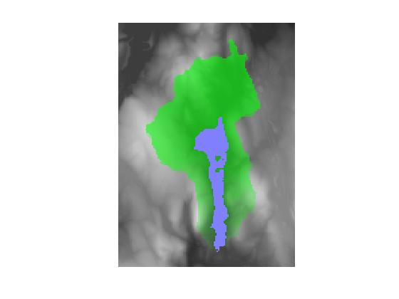

dependenceMap
Dependence map for pixel flow in a DEM
Contents
Description
D = dependenceMap(E, T, i, j) calculates a dependence map, D, for the DEM matrix, E. T is the pixel flow matrix as computed by flowMatrix. i and j are vectors containing the row and column coordinates of the ending pixels. Each element of the matrix D contains the fraction of flow from the corresponding DEM location that goes through any of the ending pixels.
D = dependenceMap(E, T, BW) uses the nonzero pixels in the mask image BW as the ending pixels for the calculation.
Connected groups of NaN pixels touching the border are treated as having no contribution to flow.
Reference
Tarboton, "A new method for the determination of flow directions and upslope areas in grid digital elevation models," Water Resources Research, vol. 33, no. 2, pages 309-319, February 1997.
Algorithm note
The Tarboton paper suggests that the dependence map can be calculated by repeated calculations of the influence map for each location in the DEM. Here the dependence map is computed by solving a linear system formed by transposing the pixel flow matrix.
Example
s = load('milford_ma_dem');
E = s.Zc;
R = demFlow(E);
T = flowMatrix(E, R);
plateaus = imerode(E, ones(3, 3)) == E;
pond = bwselect(plateaus, 183, 170);
D = dependenceMap(E, T, pond);
visMap(D, E, pond);
xlim([110 240])
ylim([80 260])
